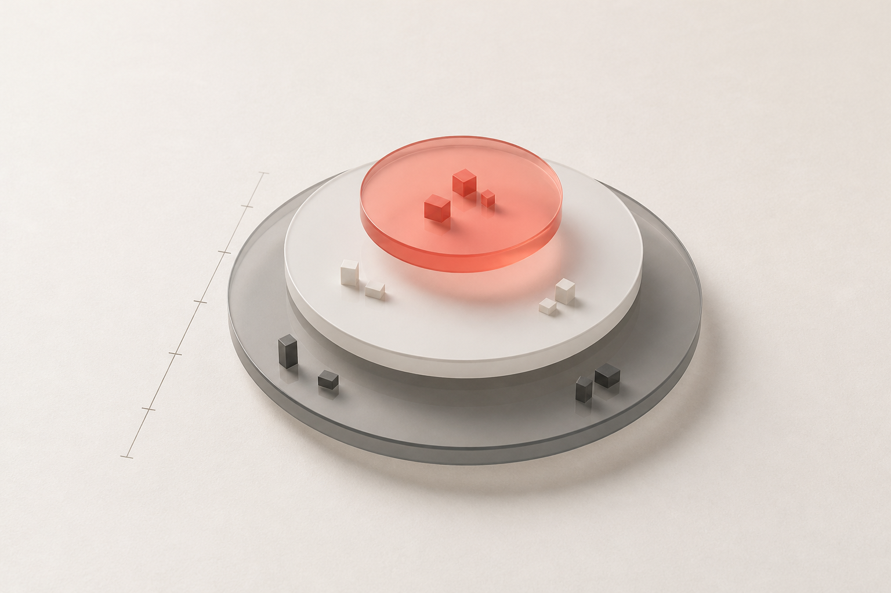

손님 반경은 감이 아니라 숫자입니다 — 키워드보다 먼저 확인할 네 가지
무료 상권 데이터로 우리 가게의 손님 반경을 먼저 정하면 지역 키워드가 저절로 좁혀집니다. 소상공인365에서 확인할 네 가지 수치와 반경별 키워드 배치, 데이터로 알 수 없는 것까지 정리했습니다.
지역 마케팅에서 순서를 하나만 바꾸면 결과가 달라집니다. 검색어 목록을 먼저 만드는 대신, 손님이 어느 거리에서 오는지를 먼저 숫자로 확인하는 것입니다. 반경이 정해지면 검색어는 그 안에서 저절로 좁혀지고, 무엇을 보여 줘야 하는지도 함께 정해집니다. 이 글은 무료로 확인할 수 있는 네 가지 수치와, 그 숫자를 키워드로 옮기는 방법을 다룹니다.
11월 22일 아침 경기 남부는 영하 6도 안팎까지 내려갔습니다. 이런 날 손님의 검색은 "가까운 데"로 수렴합니다. 평소 차로 10분을 고민하던 사람도 5분을 넘기지 않습니다. 계절이 바뀔 때마다 반경이 흔들린다면, 우리가 정해야 할 것은 감이 아니라 기준입니다.
반경을 정하면 세 가지가 함께 정해집니다#
첫째, 누구에게 말할지입니다. 도보 10분 안의 손님과 시 단위에서 오는 손님은 찾는 것이 다릅니다. 앞의 손님은 오늘 저녁과 가격을 보고, 뒤의 손님은 주차와 분위기와 목적을 봅니다.
둘째, 무엇을 먼저 보여 줄지입니다. 도보권 손님에게는 영업시간과 휴무, 대기, 예약 가능 여부가 첫 화면의 전부입니다. 차량권 손님에게는 메뉴와 주차, 단체석이 먼저입니다.
셋째, 어떤 콘텐츠를 만들지입니다. 반경이 좁을수록 짧고 자주 갱신되는 정보가, 넓을수록 길고 비교 가능한 글이 필요합니다.
무료로 확인할 네 가지 수치#
중소벤처기업부와 소상공인시장진흥공단이 운영하는 소상공인365(bigdata.sbiz.or.kr)는 64개의 공공·민간 데이터를 22종으로 융합해 상권 정보를 제공합니다. 2025년 1월 2일 정식 서비스를 시작했고, 상권분석·내 가게 경영진단·상권시장 트렌드·정책정보 안내를 한 화면에서 봅니다. 업종은 대분류 10개, 중분류 75개, 소분류 247개로 나뉩니다.
| 확인할 수치 | 어디서 | 무엇을 판단하나 |
|---|---|---|
| 같은 업종 매장 수 | 업종분석(상세분석) | 경쟁 밀도와 증감 추이 |
| 일평균 유동인구와 시간대 분포 | 간단분석 4쪽 | 피크 시간과 인력·재고 계획 |
| 유동·주거·직장인구 구성 | 인구분석(상세분석) | 점심 장사인지 저녁 장사인지 |
| 상권평가 등급(1~5) | 상권평가(상세분석) | 성장성·안정성·구매력·집객력의 상대 위치 |
리포트는 두 단계입니다. 간단분석은 회원가입 없이 4쪽으로 점포당 월평균 매출, 해당 업종 매장 수, 일평균 유동인구, 주중·주말과 시간대별 추이를 보여 줍니다. 우리 동네 수치 옆에 시·군·구와 도 평균이 함께 나오므로 "많다·적다"가 아니라 "평균보다 위·아래"로 읽을 수 있습니다. 상세분석은 회원가입 후 34쪽으로 상권평가, 업종분석, 매출분석(성별·연령별·시기별), 인구분석, 소득·소비분석을 담습니다.
반경은 원형으로 직접 그릴 수 있습니다. 특정 지점에서 최대 1.5km까지 지정되고, 골목이 길게 이어진 상권이라면 다각형으로 직접 그리는 편이 정확합니다. 전통시장이나 지하철역·KTX역 인근처럼 공단이 미리 확정해 둔 골목상권 구역을 고르는 방법도 있습니다.

같은 반경을 세 번 그려 보는 이유#
500m, 1km, 1.5km로 원을 세 번 그리면 숫자가 어떻게 달라지는지 보입니다. 500m 안 매장 수가 3곳인데 1.5km 안에 14곳이라면, 이 동네는 반경을 넓힐수록 경쟁이 급격히 늘어나는 구조입니다. 이런 상권에서 도보권 손님을 겨냥하는 것은 합리적이고, 시 단위 키워드로 나가는 것은 비효율적입니다.
반대도 있습니다. 1.5km 안 매장 수가 거의 늘지 않는데 유동인구가 3배가 된다면, 손님은 차로 오고 있다는 뜻입니다. 이때는 주차 안내와 예약 정보가 검색 결과에서 먼저 보여야 합니다.
세 번 그린 결과는 한 장에 적어 두세요. 매장 수, 일평균 유동인구, 평균 매출. 이 세 줄이 다음 분기의 키워드를 정합니다.
숫자를 키워드로 옮기는 표#
| 반경 | 검색어의 형태 | 그 반경 손님이 보는 것 | 확인할 지표 |
|---|---|---|---|
| 도보 5~10분 | 역명·시장명·골목명 + 업종 | 영업시간, 휴무, 대기, 예약 | 길찾기·전화 클릭 |
| 차 5분·행정동 | 행정동명 + 업종 | 메뉴, 가격, 주차, 리뷰 | 상세 페이지 체류 |
| 시 단위 | 목적어(모임·데이트·가족) + 지역 | 사진, 분위기, 단체석 | 저장·예약 |
도보권에서 이기지 못하는데 시 단위 글부터 쓰는 경우가 가장 흔합니다. 시 단위 키워드는 경쟁이 세고, 읽는 사람이 멀리 있습니다. 반대로 도보권 손님이 오는데 그 반경에서 우리 가게가 안 보이는 자리도 있습니다. 큰길에서 골목으로 꺾어 들어와야 하는 매장이라면, 골목 입구에서 플레이스 사진과 영업시간이 먼저 눈에 들어와야 합니다. 온라인 노출이 오프라인 동선을 대신 설명하는 셈입니다.
데이터로 알 수 없는 것#
상권 데이터는 시장의 크기를 알려 주지만, 계약의 조건은 알려 주지 않습니다. 임대료와 권리금, 층과 향, 실제 동선, 옆 가게의 업종은 현장에서 확인해야 합니다. 추정 매출은 같은 업종·같은 구역의 평균이지 우리 가게의 예상 매출이 아니고, 자료는 분기 단위로 갱신되어 최근 개업·폐업이 늦게 반영됩니다. 화면에 적힌 이용 조건과 무료 범위도 접속 시점 기준으로 확인하세요.
소상공인시장진흥공단은 11월 17일 신한카드·KCB와 카드 소비·신용 데이터를 연계한 AI 경영지원 협약을 맺었습니다. 소상공인365를 통해 제공할 계획이지만, 개시일과 이용 조건은 아직 발표되지 않았습니다. 지금 판단은 지금 있는 도구로 하면 됩니다.
자주 묻는 질문#
반경은 몇 km로 잡아야 하나요?#
업종과 이동 수단에 따라 다릅니다. 도보 고객이 중심인 카페·소형 식당은 500m~1km, 차량 방문이 많은 음식점·미용실은 행정동 단위, 목적형 매장(모임·체험)은 시 단위까지 봅니다. 정답을 고르는 대신 500m·1km·1.5km를 모두 뽑아 매장 수와 유동인구의 변화를 비교하세요.
유동인구가 많으면 매출도 높은가요?#
아닙니다. 점포 앞을 지나는 사람과 문을 여는 사람은 다릅니다. 같은 유동인구라도 골목 입구인지 중간인지, 계단인지 1층인지에 따라 결과가 달라집니다. 유동인구는 상한선을 알려 주는 숫자로 쓰고, 실제 전환은 현장에서 확인하세요.
소상공인365는 무료인가요?#
중기부와 소진공이 운영하는 공공 플랫폼으로, 회원가입 후 상권분석 리포트를 볼 수 있습니다. 다만 이용 등급과 무료 범위는 화면 안내를 기준으로 확인해야 합니다. 문의는 공단 콜센터(1644-5302)로 하면 됩니다.
지역 키워드는 몇 개까지 잡아야 하나요?#
개수보다 반경별로 나눠 두는 것이 중요합니다. 같은 반경의 키워드 세 개가 서로 다른 반경의 키워드 세 개보다 대개 효율이 좋습니다. 먼저 반경 하나에서 상위에 오르고, 그다음 반경을 넓히는 순서가 안전합니다.
마무리#
오늘 할 일은 세 가지입니다. 우리 업종을 소분류까지 고르고, 우리 가게를 중심으로 원을 세 번 그리고, 4쪽 리포트의 숫자 세 개를 적어 두는 것. 30분이면 끝나고, 그 숫자가 다음 달 키워드를 정합니다.
반경과 검색어를 함께 정리하고 싶다면 카카오톡 채널 (새 탭에서 열림)로 가게 주소와 업종을 보내 주세요. 반경별 매장 수와 유동인구를 정리해 한 장으로 보내 드리고, 그 숫자에 맞춰 지역 키워드 세 개를 같이 골라 드립니다.
KEEP READING
이어서 읽기
같은 흐름에서 이어지는 글입니다. 지금 매장에 해당하는 지점부터 읽으시면 됩니다.

경기 남부 여덟 개 시가 역할을 나눴습니다 — 동네마다 손님의 시간표가 다른 이유
11월 17일 경기도와 8개 시가 반도체클러스터 공동 지정을 추진했습니다. 수원은 연구, 성남은 설계, 용인·화성·이천·평택은 제조, 안성·오산은 소부장입니다. 역할이 다르면 손님이 가게를 찾는 시간과 단어도 달라집니다.

용인 블로그 마케팅: 수지·기흥·처인 생활권별 키워드 설계 5단계
용인은 하나의 상권이 아닙니다. 수지·기흥·처인 생활권을 나누고 지역 키워드를 동네·이동 지점·상황 순서로 쌓는 방법과, 플레이스와 블로그의 역할 분담을 다섯 단계로 정리했습니다.